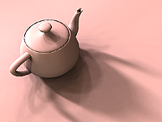
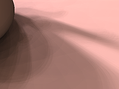
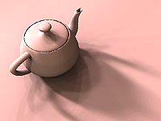

|
Spherical Q2-tree for Sampling Dynamic Environment Sequences
Liang Wan
,
Tien-Tsin Wong
and
Chi-Sing Leung
,
|
Abstract
-
Previous methods in environment map sampling seldom consider a sequence of
dynamic environment maps. The generated sampling patterns of the sequence
may not maintain the temporal illumination consistency and result in choppy
animation. In this paper, we propose a novel approach, spherical
Q2-tree, to address this consistency problem. The local adaptive
nature of the proposed method suppresses the abrupt change in the generated
sampling patterns over time, hence ensures a smooth and consistent
illumination. By partitioning the spherical surface with simple curvilinear
equations, we construct a quadrilateral-based quadtree over the sphere. This
Q2-tree allows us to adaptively sample the environment based on an
importance metric and generates low-discrepancy sampling patterns. No
time-consuming relaxation is required. The sampling patterns of a dynamic
sequence are rapidly generated by making use of the summed area table and
exploiting the coherence of consecutive frames. From our experiments, the
rendering quality of our sampling pattern for a static environment map is
comparable to previous methods. However, our method produces smooth and
consistent animation for a sequence of dynamic environment maps, even the
number of samples is kept constant over time.
Download Paper
- Acrobat: q2tree.pdf (13.2 MB) (Revised on 13 July 2005 with figure correction)
Companion Video
The companion video which demonstrates the consistency issue (20 MB).
 |
Visual Comparison
The following table shows the comparison of rendering result (still images) among various environment sampling methods
| Teapot | Zoom in | PSNR | |
| Control |
 |
 |
|
| Q2-tree |  |  | 33.9dB |
| Structured |  | 33.9dB | |
| Penrose |

|

|
33.3dB |
| LightGen |

|
31.9dB |
{kind=link}
{kind=link}
{kind=link}
{kind=link}
{kind=link}